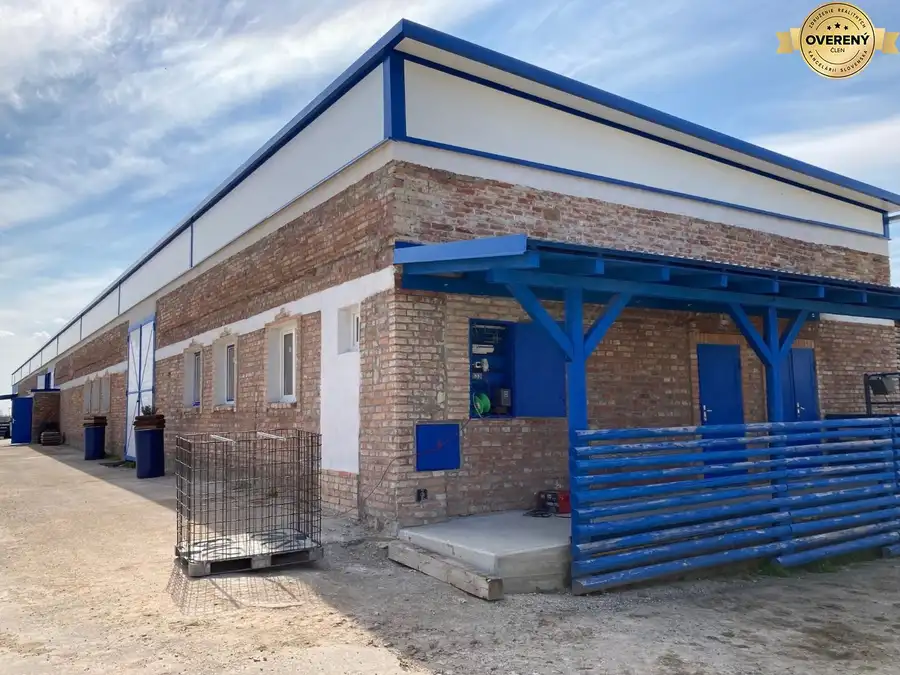
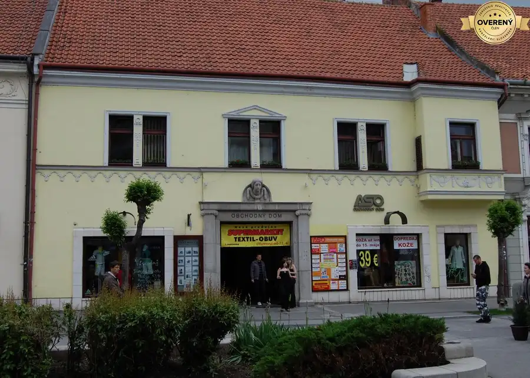
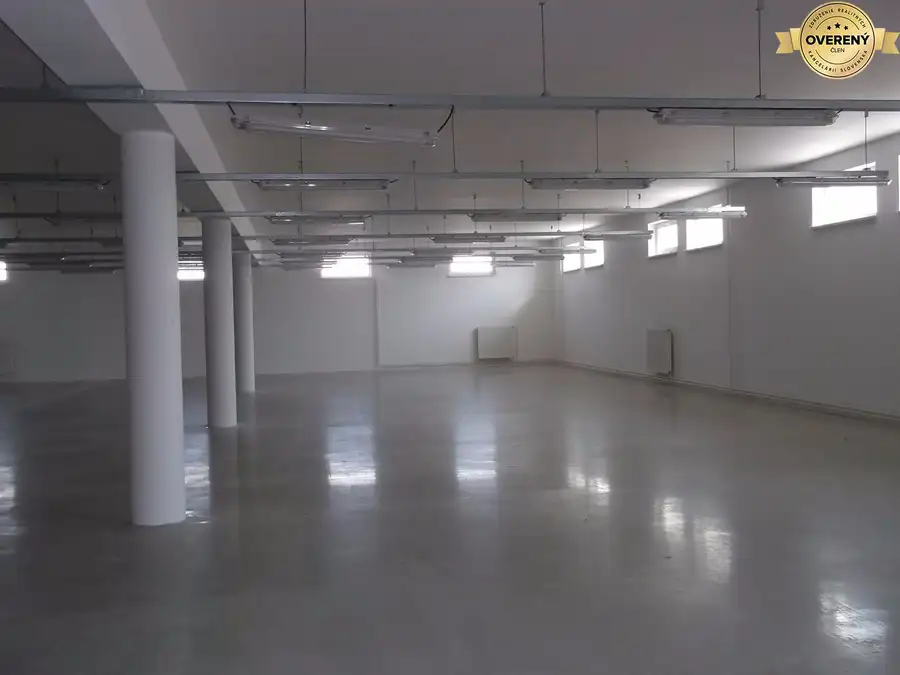

Prenájom · Nebytové priestory
Administratívne priestory v rámci budovy na Sladovníckej ul., Trnava
Trnava
Cena dohodou
- Plocha36 m²
O nehnuteľnosti
Výhodou je možnosť voľného parkovania pred budovou.
K dispozícii sú 2 kancelárie 34 m2 (dvoj-kancelária, jeden vchod) a 36 m2 .
Cena: 10,-€/m2/mesiac + DPH. (energie zahrnuté do ceny).
Pri podpise zmluvy sa platí dvoj-mesačný depozit.
Parametre
| Celková rozloha | 70 m² |
|---|---|
| Úžitková plocha | 36 m² |
| Dátum zverejnenia | 23. 8. 2022 |
Kde to je
Ďalšie ponuky
Celá ponukaMohlo by Vás zaujímať

Nebytové priestoryNové5 Cena dohodouSklad • výroba • priemysel • e-shop • 390m2 • hala v katastri Trnava Trnava 390 m² Rekonštrukcia prezentuje štýl vidieka, hala je zasadená do tohto typického prostredia a vie štýlovo podporiť koncept určitého druhu prevádzok.…
Nebytové priestory Cena dohodouObchodno prevádzkové priestory v priamom centre - pešia zóna - Trnava Trnava 400 m² Priestory využívané do súčastnosti prevažne pre obchod rôzneho charakteru - odevy, drogéria, potravinové doplnky, šperky. Výmeru tvorí - predajná…
Nebytové priestory10 13 500 €Výrobno skladový objekt, reprezentatívne priestory, Trnava Modranka Trnava, TRNAVA 3000 m² PONÚKAME 3000 m² výrobných / skladových / a kancelárskych priestorov a 10000m² parkovacích a manipulačných plôch situovaných len 2 km od diaľničného…